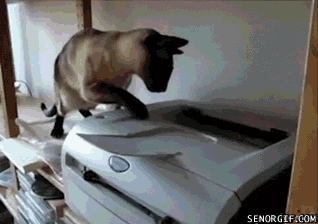
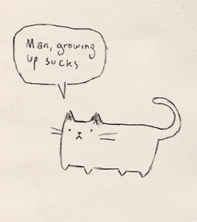
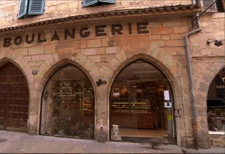
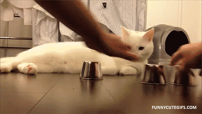
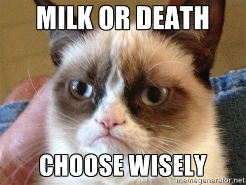
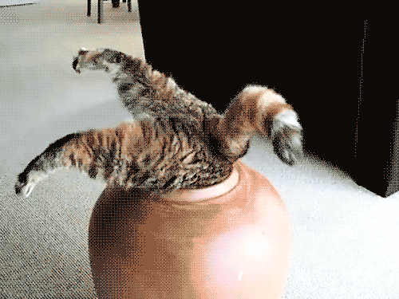
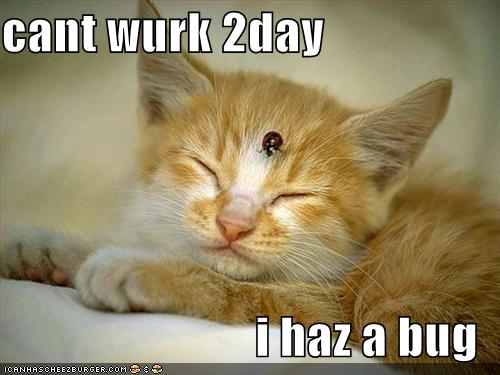
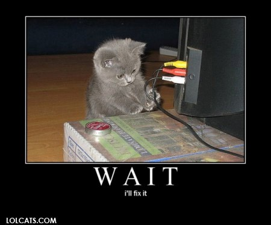
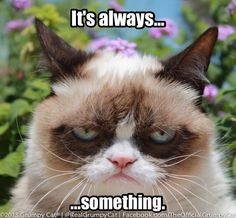

How we learned to stop worrying and love new technologies
Ivan Paponov
TL;DR
- new technologies are hard

Let me tell you something about events first
Events are growing
(16 month ago vs now)
18k/s 65k/s32MB/s >100MB/s1.5TB/day >6.5TB/day

Old school events
[ producers ] --push--> [ eventlogs ]
[ eventlogs ] <--pull-- [ event collectors ]
[ event collectors] --push--> [ filer ]
[ event collectors] --push--> [ redis ]
[ clients ] -> [ muxer ] -> [ redis ] -> [ filer ]
Problems?
- nfs performance degradation
- 1G NIC
- complexity

We want
- distributred, horizontaly scalable storage
- easy to maintain
- stable
- can work efficiently on 1G network

Carte blanche
- We test
- We test more
- And some more tests
- wiki -> NewMultiplexerStorageQuest
Riak won
[ producers ] --push--> [ eventlogs ]
[ eventlogs ] <--pull-- [ event collectors ]
[ event collectors] --push--> [ storage ]
[ clients ] -> [ storage ]
Riak 101
- it's a key value store
- it haz vnodes
- choose your tradeoffs wisely
- read (and write) from (to) any node
You can't just install and be done with it
All those options
- bucket types
- quorum
- data design

Not all of the options work as expected
Ecosystem
echo parallel -P2 --gnu --tag --halt 2 'ssh {} "echo _______________ {} ____________ && date && echo removing from roster && sudo /usr/local/bin/riak-remove-from-roster.sh && echo waiting for all clients disonnecting && sleep 120 && date && echo restarting riak && sudo riak stop && sleep 120 && sudo riak start && sudo riak-admin wait-for-service riak_kv rk101@{} && echo sleep 10 && sudo riak ping && date && echo put back in roster && sudo /usr/local/bin/riak-put-back-in-roster.sh"' ::: rk101riak-\{01..12\}.ams4.prod.booking.com rk101riak-\{16..19\}.ams4.prod.booking.com
And more optimizations
- Minimizing intra-cluster traffic
- Substreams

More complexity - more bugs

Procedures need to be defined
- Cluster extension
- Node maintenance

Erlang and development process

Still think it's a good idea?
- if you need somethnig, no one will stop you
- you'll encounter some push back though
- but think twice before you'll get yourself into this
/